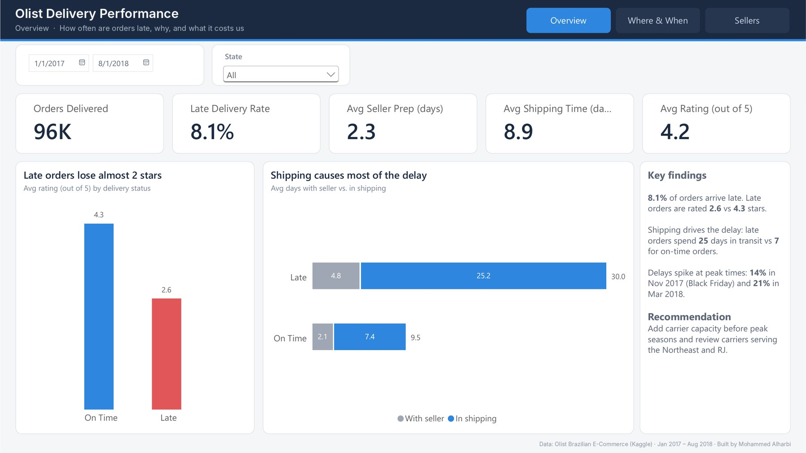
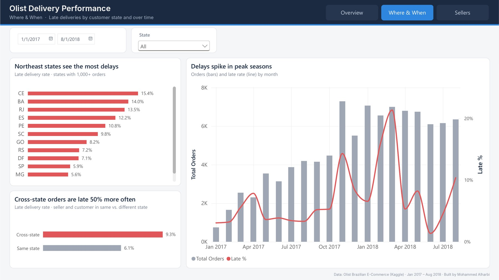
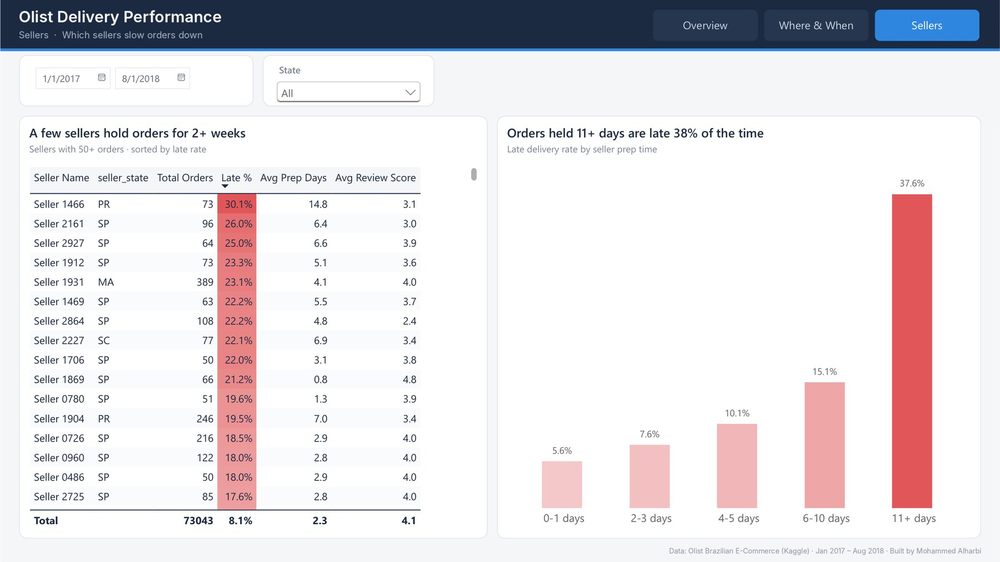

Olist Delivery Performance
An operations analysis of ~96,000 delivered orders from Olist, a Brazilian e-commerce marketplace — how often orders arrive late, why, and what it costs in customer satisfaction.

View full size ↗
View full size ↗
View full size ↗Headline KPIs, how lateness affects ratings, and where the time goes — with the seller or in shipping.
Business questions
Key findings
About 8K of 96K delivered orders arrived after the estimated date.
Late orders are rated 2.6 / 5, compared with 4.3 for on-time orders.
Shipping drives most of the delay; time with the seller only rises from 2.1 to 4.8 days.
Late 9.3% of the time vs 6.1% within the same state. The Northeast is hit hardest (CE 15.4%).
Late rate jumps around Black Friday (Nov 2017) and passes 20% in March 2018.
Orders held 11+ days by the seller are late 38% of the time, vs under 6% when shipped within a day.
Recommendations
Add carrier capacity before peak seasons, especially November.
Review carriers serving the Northeast and RJ, and consider fulfilment closer to those customers.
Set a maximum prep time for sellers and follow up with those who regularly exceed it.
How it was built
Data prep · Power Query
- 5 tables, delivered orders only
Prep Days,Shipping DaysandIs Latecolumns- ~1,350 orders with impossible timestamps: blanked the broken value instead of deleting the order
- Readable seller labels instead of hashed IDs
Data model
- Star schema with
ordersas the fact table - Single-direction filters by default
- Two-way filter between
ordersandorder_itemsso seller filters reach order metrics
DAX
- Late rate, averages and rating measures
- Rating averaged per order (some orders have several reviews)
- Prep-time buckets and route columns, with custom sort order
AVERAGEX(orders,
CALCULATE(AVERAGE(reviews[review_score])))
Design
- Custom theme and a fixed 1280×720 grid
- One colour per meaning: red for late, grey for context
- Chart titles state the finding
- Synced filters and page navigation